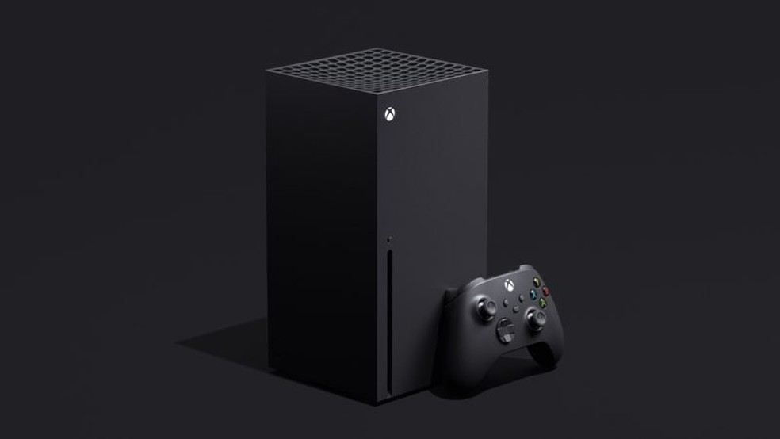
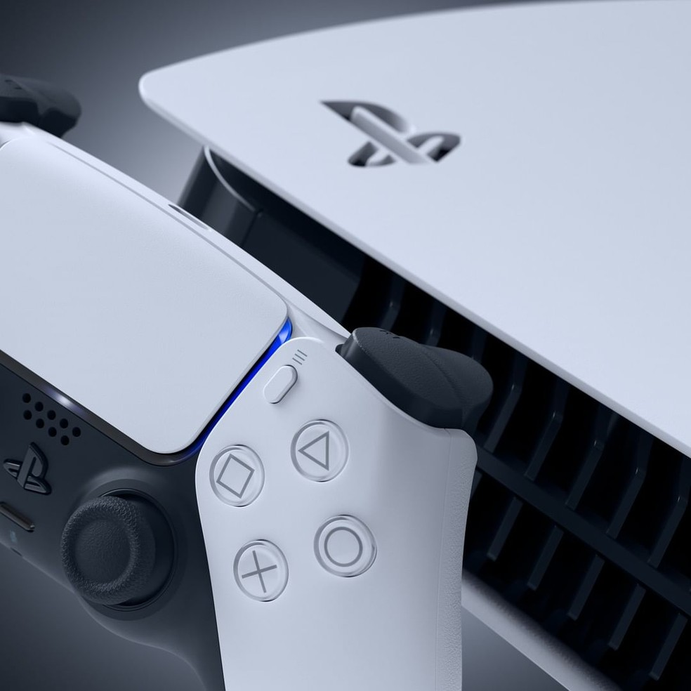

PS5, Xbox Series X ou Xbox Series S: veja a performance dos consoles
Redução do IPI tornou consoles da Microsoft mais baratos que o da Sony; Confira os principais detalhes que diferenciam os videogames da nova geração
Com a nova geração chegando, a comparação entre o PS5 e o Xbox Series X/Xbox Series S é inevitável e mesmo necessária. O console da Sony apresenta melhores novidades na arquitetura, controle e armazenamento, enquanto o robusto processamento do Series X sustenta sua melhor qualidade gráfica. O Series S fica pra trás na comparação, por se tratar de uma versão acessível do top de linha da Microsoft. O ge separou todos os dados que você precisa para avaliar essas máquinas e dar o seu veredito.
no quesito armazenamento, o console da Sony leva vantagem sobre os concorrentes. A tecnologia SSD chegou aos HDs dos videogames após anos de uso intenso nos PCs gamers, porém o PS5 conta com uma velocidade de transferência entre armazenamento e processamento superior a qualquer computador no mercado: 5,5 GBs por segundo, podendo chegar a até 9 GBs por segundo utilizando recursos de compressão de informação suportados pela Sony. Os consoles da Microsoft operam em 2,4 GBs por segundo, chegando num máximo de 4,8 GBs por segundo utilizando também recursos de compressão.
No espaço total o Series X possui um HD de 1 TB, superior ao da Sony (825 GBs) e a sua versão mais acessível (512 GBs) - porém todos eles possuem um slot para aumentar a memória. O PS5 pode receber um HD SSD similar aos usados em PC, porém a Sony deixa claro que apenas alguns HDs são certificados e compatíveis com o slot. A Microsoft terá um "expansor" de memória próprio, produzido pela empresa, que vai lembrar um cartão de memória.
SAIBA MAIS
caso esteja interessado em comprar segue os links abaixo
- Console Xbox Series X 1Tb + Controle Sem Fio - Preto
- Console Ps5 Playstation 5 8k Com 2 Controles Dualsense